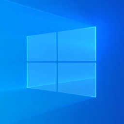

CSCRM es un software para el control del stock y el C.R.M para el seguimiento de los clientes para su empresa o emprendimiento.
Para instalar el software, haga clic en uno de los botones de descarga segun su sistema operativo.
Informacion Se requiere de la instalacion de Java. Si lo tiene instalado ya puede descargar nuestro software. En caso contrario entrar a Java Informacion

MAC:
Apple MAC
Se requiere de Java 1.8 o superior
Debian:
Linux paquete .deb
Se requiere de Java 1.8 o superior

Fedora:
Linux paquete para Fedora
Se requiere de Java 1.8 o superior

64 bits:
Windows de 64 bits
Se requiere de Java 1.8 o superior
32 bits:
Version para 32 bits
Se requiere de Java 1.8 o superior